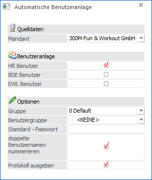
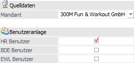
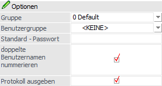
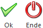

Achtung
Der Menüpunkt wird aktuell nicht unterstützt bzw. können die Benutzer, die dadurch angelegt werden, nicht verwendet werden.
Über den Menüpunkt…
1 Benutzer
1 Automatische Benutzeranlage
…können automatisch Benutzer angelegt werden, welche in weiterer Folge mit diversen Modulen (derzeit HR-Modul und BDE-Modul) arbeiten sollen/können.

Einstellungsmöglichkeiten

Ø Quelldaten - Mandant
Aus der Auswahlbox kann der Mandant gewählt werden, vom welchem für die Arbeitnehmer (LOHN A bzw. LOHN D) die WinLine Benutzer angelegt werden sollen.
Ø Benutzeranlage
An dieser Stelle kann per Option definiert werden, was für WinLine Benutzer erzeugt werden sollen:
ü HR Benutzer
Wird die Checkbox
aktiviert, dann werden für alle aktiven AN, die im ausgewählten Mandanten
vorhanden sind, WinLine Benutzer für HR angelegt.
ü BDE Benutzer
Wird die Checkbox
aktiviert, dann werden für alle aktiven AN, die im ausgewählten Mandanten
vorhanden sind, WinLine Benutzer für BDE angelegt.
ü EWL Benutzer
Wird die Checkbox
aktiviert, dann werden für alle aktiven AN, die im ausgewählten Mandanten
vorhanden sind, WinLine Benutzer mit dem Benutzer-Typ "EWL Benutzer"
angelegt.
Optionen

Ø Gruppe
Aus der Auswahlbox kann gewählt werden, in welche der 10 Systemgruppen die Benutzer angelegt werden sollen.
Ø Benutzergruppe
Aus der Auswahlbox kann zusätzlich eine Benutzergruppe (Personengruppe) ausgewählt werden, welche dem Benutzer zugeordnet werden soll. Diese Benutzergruppe bestimmt u.a. auch, welche Workflows der Benutzer in weiterer Folge sehen bzw. bearbeiten kann. Wird hier keine Auswahl getroffen, so erfolgt auch keine Benutzergruppenzuordnung.
Ø Standard - Passwort
Hier kann ein Standard-Passwort für alle anzulegenden Benutzer definiert werden. Wenn sich der Benutzer dann das erste Mal anmeldet, so muss dieser das Passwort ändern.
Hinweis
Auch wenn kein Standard-Passwort definiert wird, werden die angelegten Benutzer während des ersten Einloggens zur Vergabe eines Passworts aufgefordert.
Ø doppelte Benutzernamen nummerieren
Wenn diese Checkbox aktiviert ist, dann werden doppelte Namen mit einer fortlaufenden Nummer versehen. Bleibt die Checkbox inaktiv, dann werden nur die Benutzer angelegt, die noch nicht als Benutzer angelegt wurden.
D.h. wenn die automatische Benutzeranlage erstmalig durchgeführt wird, dann sollte die Option aktiviert sein, bei nachfolgenden "Übernahmeläufen" sollte die Checkbox deaktiviert werden.
Ø Protokoll ausgeben
Wenn diese Option aktiviert ist, dann wird zur Benutzeranlage auch ein Protokoll gedruckt, welches automatisch in den Spooler gestellt wird.
Buttons

Ø Ok
Durch Anklicken des Buttons "Ok" bzw. der Taste F5 werden die Benutzer gemäß den Einstellungen angelegt. Ist in AN-Stamm eine E-Mail-Adresse hinterlegt, wird diese auch in den Benutzer in das Feld "SMTP-Absender" mit übernommen.
Ø Ende
Durch Drücken des Buttons "Ende" oder der Taste ESC wird das Fenster geschlossen.